계획 영양 Stage 4 — before / after
같은 fixture, 날짜, viewport로 캡처했습니다. Before는 master 기준이며 After는 영양 요약과 고정 CTA를 포함합니다.
PLANNER_WEEK · 390×844
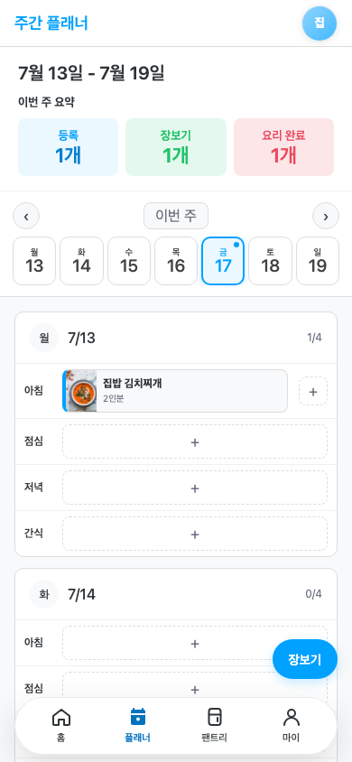
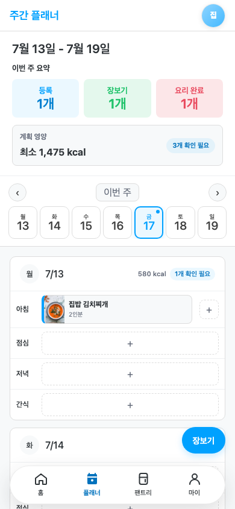
PLANNER_WEEK · 320×568
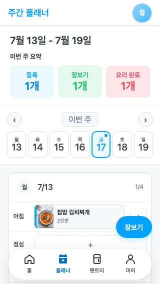
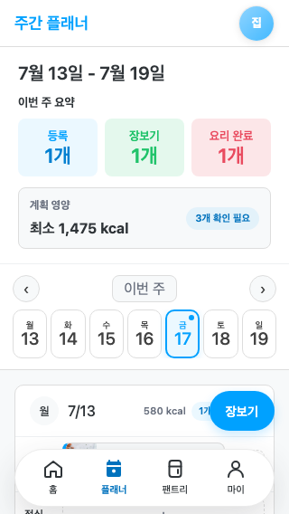
PLANNER_WEEK · desktop 1280×900
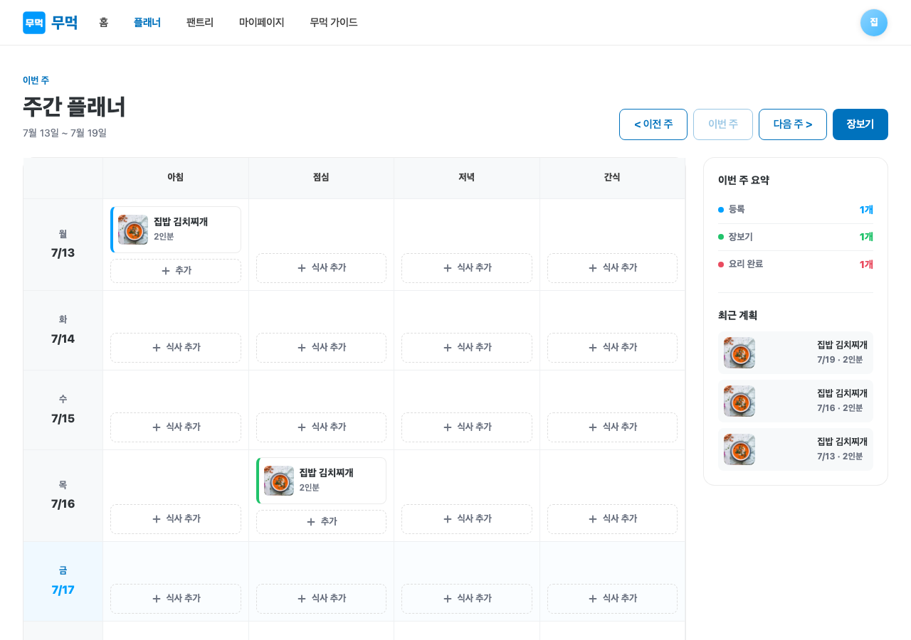
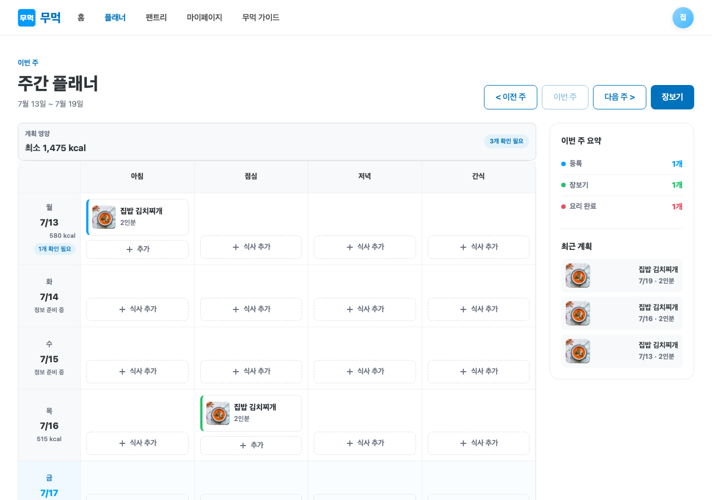
MEAL_SCREEN · 390×844
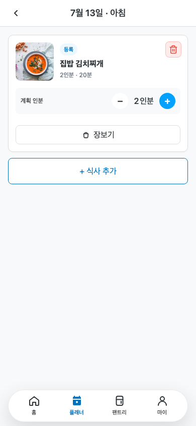
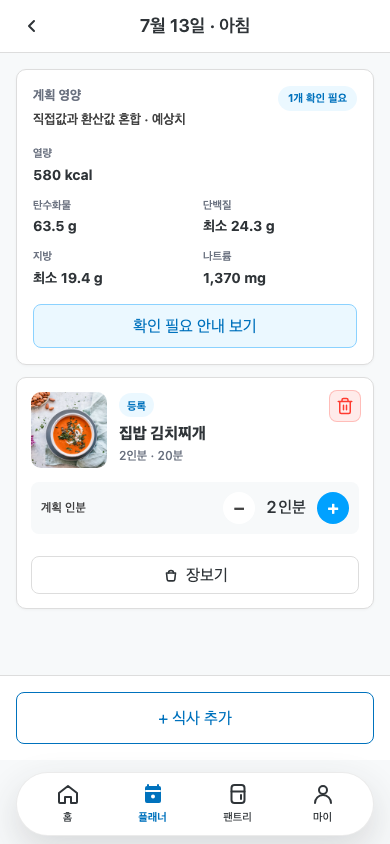
MEAL_SCREEN · 320×568
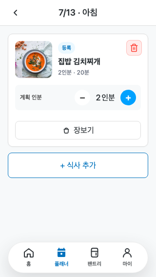
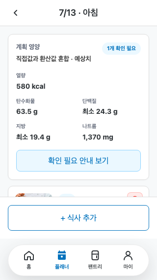
MEAL_SCREEN · desktop 1280×900
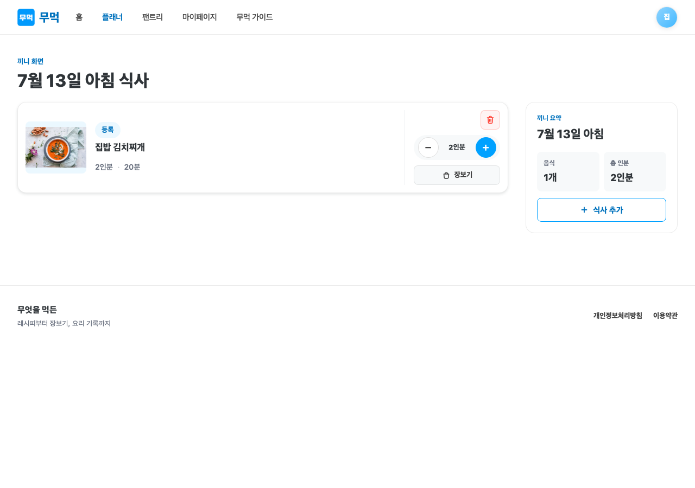
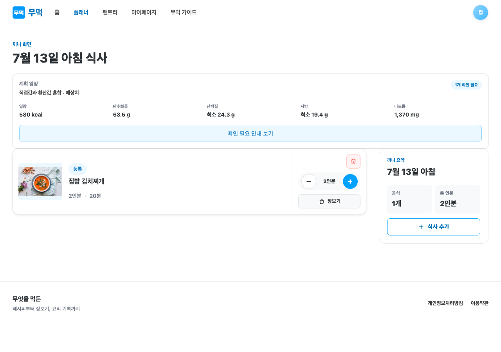